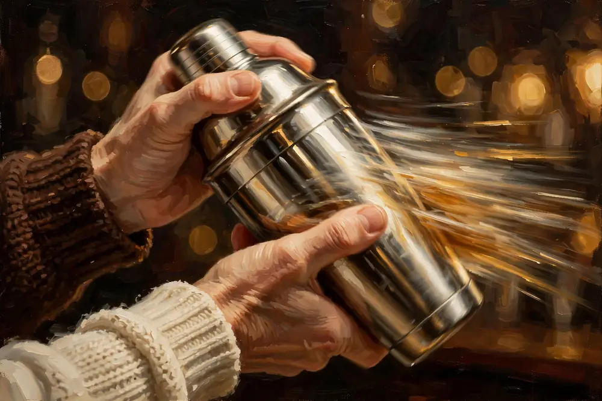
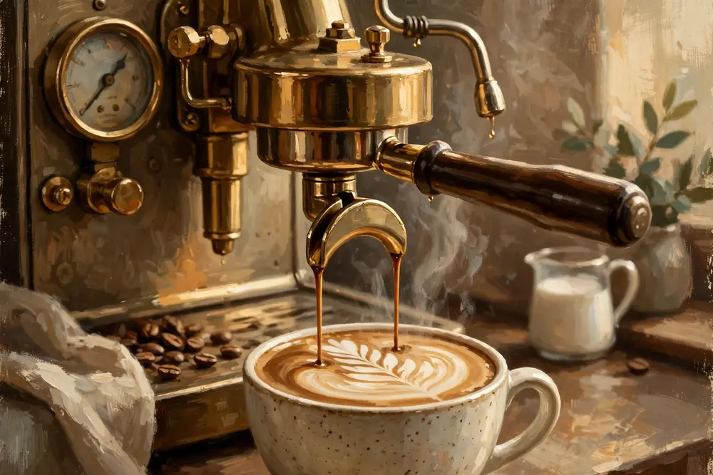
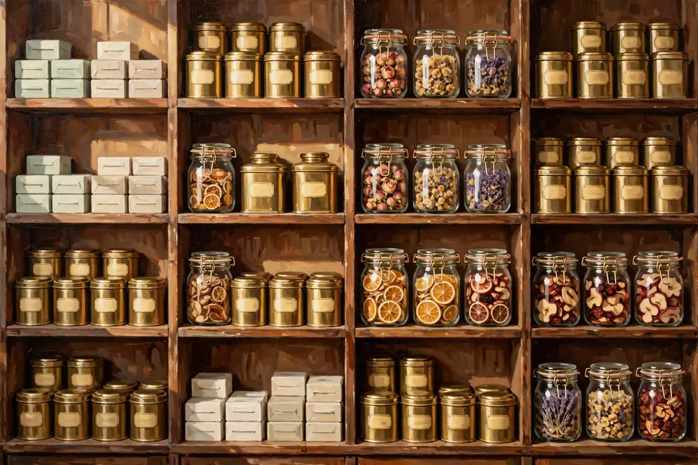
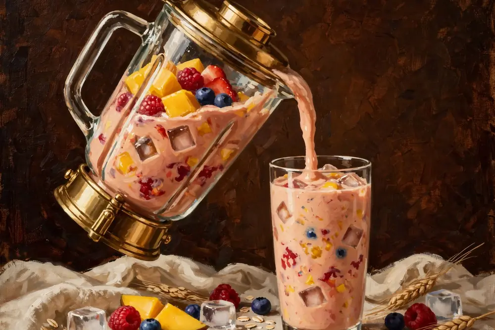
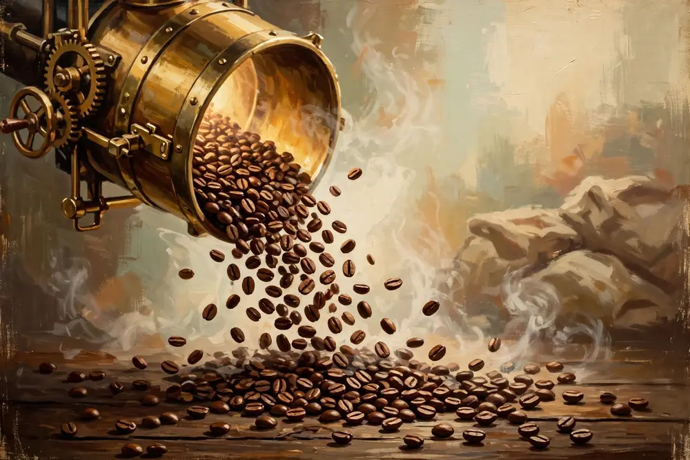

A tall layered cocktail in a clear glass, distinct amber, gold and cream layers, backlit on a dark wooden bar, warm brass lamp glow, wisps of citrus peel on the rim. Warm oil painting, retro poster illustration, deep roast coffee brown, milk-foam cream and brass gold palette, soft directional light, visible brush texture, refined and calm, no text, no letters, no watermark, no people facing camera.
IMG-002時間軸・1995 金樽盃｜概念插畫｜3:2｜參考照片：無

搖酒的手：雪克杯帶著殘影，冠軍就是這樣搖出來的。
Close-up of hands shaking a stainless steel cocktail shaker, motion blur on the shaker, dark bar background with warm bokeh lights, hands only, no face. Warm oil painting, retro poster illustration, deep roast coffee brown, milk-foam cream and brass gold palette, soft directional light, visible brush texture, refined and calm, no text, no letters, no watermark, no people facing camera.
IMG-003專長四藝・咖啡｜概念插畫｜3:2｜參考照片：無

義式機沖出兩道濃縮，杯面一片葉形拉花正在成形。
An espresso machine pouring a double shot into a ceramic cup, delicate leaf latte art forming on the surface, rising steam, warm morning light. Warm oil painting, retro poster illustration, deep roast coffee brown, milk-foam cream and brass gold palette, soft directional light, visible brush texture, refined and calm, no text, no letters, no watermark, no people facing camera.
IMG-004專長四藝・茶飲｜概念插畫｜3:2｜參考照片：無

茶包牆：茶罐與花果茶玻璃罐排成一面牆。
A shop wall of neatly arranged tea tins and tea boxes in a grid, brass labels, warm wood shelves, a few glass jars of dried flowers and fruit tea. Warm oil painting, retro poster illustration, deep roast coffee brown, milk-foam cream and brass gold palette, soft directional light, visible brush texture, refined and calm, no text, no letters, no watermark, no people facing camera.
IMG-005專長四藝・冰沙｜概念插畫｜3:2｜參考照片：無

冰沙出杯：芒果、莓果與冰塊倒進高腳杯。
A blender jar filled with fresh mango, berries and ice, a thick smoothie being poured into a tall glass, bright fruit colors against deep brown background. Warm oil painting, retro poster illustration, deep roast coffee brown, milk-foam cream and brass gold palette, soft directional light, visible brush texture, refined and calm, no text, no letters, no watermark, no people facing camera.
IMG-006專長四藝・陪人開店｜概念插畫｜3:2｜參考照片：無

烘豆機滾筒倒出熱氣騰騰的咖啡豆。
Coffee beans tumbling from a roaster drum, warm golden glow, scattered roasted beans on dark wood, rich aroma suggested by soft steam. Warm oil painting, retro poster illustration, deep roast coffee brown, milk-foam cream and brass gold palette, soft directional light, visible brush texture, refined and calm, no text, no letters, no watermark, no people facing camera.
IMG-007代理品牌｜概念插畫｜3:2｜參考照片：無
吧台靜物：糖漿瓶、量酒器、雪克杯與柑橘。
A bar counter still life: syrup bottles, jiggers, bar spoons, a shaker and citrus fruits arranged in a row, warm side light, deep shadows. Warm oil painting, retro poster illustration, deep roast coffee brown, milk-foam cream and brass gold palette, soft directional light, visible brush texture, refined and calm, no text, no letters, no watermark, no people facing camera.
IMG-008公益足跡｜概念插畫｜3:2｜參考照片：無
海岸公路上的長途騎行：10 天 1,180 公里的公益路。
A lone cyclist silhouette riding along a coastal road at sunrise, sea on one side, warm gold sky, sense of a long charity journey, small figure, no identifiable face. Warm oil painting, retro poster illustration, deep roast coffee brown, milk-foam cream and brass gold palette, soft directional light, visible brush texture, refined and calm, no text, no letters, no watermark, no people facing camera.